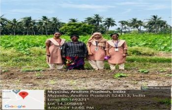
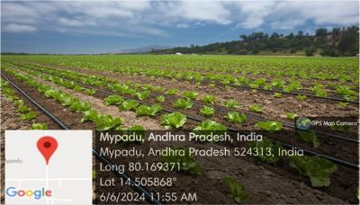

WEEKLY REPORT
WEEK- 4 (From 03-06-24 to 08-06-24)
Objective of the Activity Done: Utilization Of Electricity by Farmers and Related Issues
Detailed Report:
Day 1:
-
- >On the day of our survey, we got to know an irrigation method called ‘Drip irrigation’.
- >We prepared survey questionnaire, and initial questions on drip irrigation.
Day 2:
- >We learnt how drip irrigation works. It works based on many categories.
- >Some are tubing and emitters, water source, crop types.
- >In this method, water is supplied directly through roots.
Day 3:
- >After knowing all these, we surveyed abut its advantages.
- >Like- Energy savings, increased plant health, money savings.
Day 4:
- >All can’t be good, so we surveyed also about its disadvantages.
- >It reduces life span of tube due to direct sunlight, sometimes water may not be distributed evenly to crops.
Day 5:
- >Drip irrigation includes in different types for different crops and farming practices.
- >Micro sprinkler for large areas, Inline drip for row crops and gardens, subsurface drip for crops that grow under surface.
Day 6:
- >At last we are interested in knowing which crops are growing under this system.
- >They are vegetables like tomato, onion. Cash crops like sugarcane, cotton and more like grapes, banana, etc.


